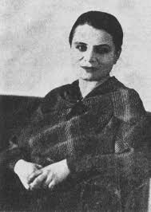

Marie Čermínová (Toyen)
| Portrét | Základní údaje | Významné činy | |
|---|---|---|---|
|  | Marie Čermínová |

|
|
| 21. září 1902 | 9. listoadu 1980 | ||
| Narodila se na Smíchově (dnes Praha-Smíchov). Byla česko-francouzská malířka, jedna z představitelek evropského surrealismu. Patří mezi nejvýznamnější a nejsvobodnější tvůrčí osobnosti umělecké avantgardy první poloviny 20. století. | |||
| Toyen v roce 1930 | |||
| Marie Č. wikipedie | |||
Značky a atributy tabulky
- table
- značka pto tabulku
- tr
- označení jednoho řádku
- td
- označení jednoho sloupce
- colspan
- atribut zajišťující rozpětí přes několik sloupců,
- rowsan
- atribut zajišťující rozpětí přes několik